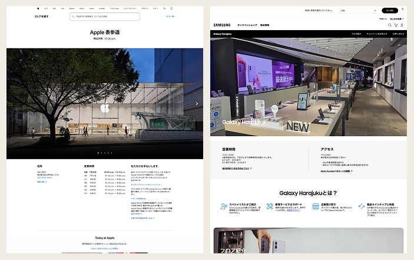
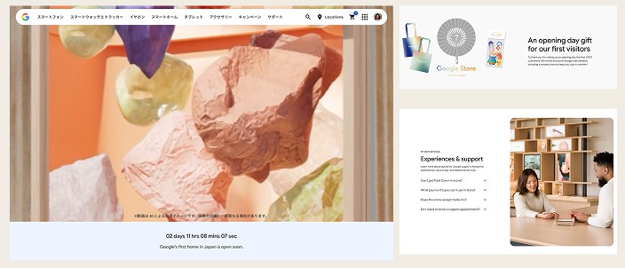

Context & challenge
Google's first physical retail store in Japan was opening in Omotesando, and the digital storefront needed to do more than announce it. It needed to generate enough talkability and foot traffic that people actually visited — translating a physical retail experience into a phased, mobile-first digital campaign.
Role & contribution
Senior UX/UI Designer, working with Lexter (Production Lead) and May (Account Lead).
Research & insights
Japanese consumer behaviour research shaped nearly every decision on this project. Three-quarters of consumers say brand transparency is a prerequisite for trust, and Japan scores 92 out of 100 on uncertainty avoidance, one of the highest in the world.
Dense, upfront information isn't clutter to a Japanese audience — it's what builds legitimacy. That directly contradicts a Western instinct toward minimalism, and it's the reason the page leads with detail rather than hiding it.

Competitor benchmarking reinforced the gap to fill. Apple's nearby Omotesando store site is scannable and well produced but relies on a clinical, globalised template that ignores the neighbourhood entirely: sterile hero imagery, no visible people, a walled-garden support model. Samsung's Galaxy Harajuku site, 200 metres up the road, gives clear logistical details but undersells what is Samsung's largest showcase store in the world through static, uninviting imagery. Both left an opening: a site with the clarity of Apple's and the warmth neither competitor achieved.
Design strategy & approach
The approach was to mirror the physical experience in the digital one, deliberately: the teaser phase should feel like a peek inside, and launch should feel like stepping through the front doors, using existing and planned assets (facade video, in-store content, stairwell footage) to keep that continuity. Built mobile-first for a tech-savvy audience, with every module ending in something actionable: add to calendar, get directions, sign up.

Solution
The core landing page follows: a hero module built around a single "Google's first home in Japan" video, a details module for date, hours, and location, a store-level overview translating the physical layout into an interactive floor-by-floor carousel, a support services module, a product carousel of locally popular devices, a merch module teasing opening-day giveaways, and a CRM module tying sign-up directly to an add-to-calendar action.
Beyond the landing pages, the campaign runs across a slim storefront banner, an MPA home hero visual, and a support page tile — phased across multiple beats rather than launched all at once.

Reflection & learnings
The clearest test of the research was the density decision itself: building a page dense with information for an audience that would read minimalism as untrustworthy is a genuinely different design problem to most Google Store work, and it's the strongest evidence in this case study of adapting to a market rather than exporting a template into it.